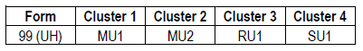

1 PISA 2022 통합 평가 설계
1.1 소개
이 장에서는 PISA 2022의 통합 평가 설계와 PISA 2022 주기의 평가 검사형을 설계하기 위해 PISA Core A 계약자인 ETS(Educational Testing Service)가 사용하는 프로세스에 대해 설명합니다. PISA 2022 주기의 인지 검사에는 다음이 포함되어 있습니다.
주영역인 수학 시험
두 가지 보조영역인 읽기와 과학 시험
창의적 사고력 검사, 혁신적 영역
금융 소양 검사, 국제 옵션
수학 평가의 개발은 본 기술 보고서의 제3장에서 자세히 논의됩니다. 창의적 사고력 영역의 개발은 본 기술 보고서의 제4장에서 제시되고 논의됩니다.
1.2 PISA 2022 통합 설계
PISA 2022의 통합 평가 설계 목표에는 다음이 포함됩니다.
PISA의 세 가지 핵심 영역(읽기, 수학, 과학)에서 시간 경과에 따른 추이 측정을 지속적으로 개선합니다.
응답자의 부담을 최소화하는 동시에 평가하는 각 영역과 각 참여 학생으로부터 얻은 정보의 범위를 최대화합니다.
관심 있는 하위 모집단을 포함하여 각 국가에서 전국적으로 대표되는 15세 표본의 성취도를 정확하게 기술합 니다.
이러한 성취도를 정책 관련 영역의 다양한 지표와 연결합니다.
이러한 목표를 달성하기 위해 PISA 2022의 설계는 PISA 2015 주기에 처음 도입된 설계 및 방법론적 혁신과 PISA 2018 주기의 단계적 적응형 검사 경험을 바탕으로 이루어졌습니다. 당면한 주기에 초점을 맞춰 매번 새로운 채점 변환이 필요했던 PISA 2015 이전 주기와 달리, PISA 2015에 도입된 방법론은 당시 사용 가능한 모든 데이터를 채점 변환에 통합하여 PISA 2015는 물론 향후 주기에도 적용할 수 있는 채점 변환을 제공했습니다. 이는 모든 인지 영역에 대해 주기 간, 그리고 지필과 컴퓨터 기반 시행 간의 연계화(linking)를 위한 보다 견고한 기반을 제공했으며 컴퓨터 기반 적응형 검사로의 개발과 전환을 촉진했습니다.
PISA에 특히 적합한 적응형 검사의 한 형태인 단계적 적응형 검사는 읽기 영역에서 PISA 2018에 채택되었습니다. 이는 개별 응답자에게 과도한 부담을 주지 않으면서 이질적인 집단에서 측정 오차를 줄이기 위한 목적으로 채택되었습니다. 2018 MSAT의 경험과 읽기 영역과 수학 영역의 차이점에 주목한 결과, PISA 2022의 수학 CBA 평가를 위한 MSAT 설계를 더욱 개선할 수 있었습니다. 이러한 설계 및 방법론적 혁신을 통해 국가/경제 간 비교 가능성을 개선하고, 모수 추정 및 추이 측정을 개선하며, 데이터를 통한 추론의 신뢰성을 향상시킬 수 있었습 니다. 또한, PISA 2022 설계의 일환으로 ETS는 읽기, 수학, 과학의 핵심 영역과 함께 창의적 사고력 영역을 평가 설계에 통합했습니다.
1.2.1 주영역과 보조영역 적용 범위의 구분 최소화
PISA 2015 이전에는 주영역과 보조영역 모두에서 각 문항에 응답한 학생 수를 비교적 일정하게 유지하는 데 중점을 두고 시험 설계를 진행했습니다. 그 결과, 표 2.1에서 볼 수 있듯이 보조영역에 포함된 문항 수는 주영역의 문항 수보다 현저히 적었습니다(각 주기마다 굵은 글꼴로 표시). 예를 들어, 2000년, 2006년, 2009년에 수학이 보조영역이었던 경우, 2003년에 수학이 주영역이었을 때 사용된 문항의 약 50%, 2012년에 수학이 주영역이었을 때는 32~44%가 보조영역에 포함되었습니다. 또한 읽기는 2003년과 2006년에 보조영역이었을 때, 2000년에 주영역이었을 때 사용된 문항의 약 20%만 포함되었습니다.
메인 설문조사의 영역별 및 주기별 문항 수">표 2.1. 본조사 주기별 영역별 문항 수
참고: 굵은 숫자는 각 주기의 주영역을 나타냅니다. 2015년과 2018년 주기의 경우, 컴퓨터 기반 수학 검사도구에는 82개의 문항이 포함된 반면, 동일한 지필 기반 검사도구에는 83개의 문항이 포함되었습니다. 이는 2015년에 컴퓨터 기반 평가로 전환할 수 없었던 문항이 하나 있었기 때문입니다(이 문항은 학생들이 지도 위에 그림을 그려야 합니다). 2022년 주기의 수학 문항 수에는 74개의 ‘추이(trend)’ 문항(즉, 이 주기 이전에 개발된 문항)과 160개의 ‘신규(new)’ 문항(즉, 이번 주기에 개발된 문항)이 포함됩니다.
반면, 2022년 PISA의 평가 설계에 따르면 읽기 보조영역의 문항 수는 197개로 2018년 읽기 주영역 문항의 80%, 과학 보조영역의 문항 수는 115개로 2015년 과학 주영역 문항의 63%에 해당합니다. 또한, 세 가지 핵심 영역의 총 문항 수는 2012년 206개에서 2022년 546개로 10년 만에 165% 증가했습니다. 전체적으로 각 보조영역에 더 많은 수의 문항을 포함시킴으로써 각 보조영역의 구성 범위가 주영역의 구성 범위와 더 비슷해져 추이 측정을 안정화하고 개선하는 데 도움이 되었습니다. 목표 표본 크기는 그에 따라 증가하지 않았기 때문에 보조영역의 문항당 학생 응답 수가 감소했습니다. 그러나 보조영역의 경우 추이 문항이 사용되기 때문에 일반적으로 현재 PISA 주기의 정보와 해당 과목이 주영역이었을 때의 정보를 결합하여 각 문항에 대한 충분한 데이터를 확보할 수 있습니다.
이러한 추이 측정 방식에 따라 각 영역은 4번의 PISA 주기에 걸쳐 ’영역 순환’을 거치게 되는데, 이 순환은 새로운 평가틀 또는 개정된 평가틀로 시작하여 이후 두 번의 주기에서 보조영역이 되는 과정으로 이어집니다. 네 번째 주기에서 주영역이 되는 것으로 순환이 끝나고 다시 시작됩니다. 전체 영역 주기의 마지막에는 새로운 데이터 수집을 위한 평가에 대해 현재의 생각을 반영하여 평가틀을 주영역으로 개정하는 작업이 포함됩니다. 예를 들어, PISA 2022에서 수학이 주영역으로 채택되고 컴퓨터 기반 문항이 도입됨에 따라 수학이 주영역으로 채택된 마지막 PISA 2012에서 측정된 내용보다 더 폭넓게 구성되었습니다. 수학에 대한 평가틀과 검사도구는 향후 두 번의 PISA 주기 동안 그대로 유지될 것으로 예상되며, 다음 수학 평가 개정은 수학이 다시 주영역이 되는 PISA 2033에서 이루어질 것으로 예상됩니다.
1.2.2 단계적 적응형 검사
PISA 관리위원회(이하 PGB)의 PISA 장기 개발 전략에는 컴퓨터 기반 검사의 장점을 지속적으로 활용한다는 목표가 포함되어 있으며, 특히 성취도 척도의 극한에서 측정 정확도와 효율성을 더욱 향상시키기 위해 적응형 검사의 사용을 늘리는 것이 포함됩니다. 또한, 적응형 검사는 더 넓은 범위의 능력 분포를 측정할 수 있게 함으로써 더 다양한 참가자를 더 잘 측정할 수 있게 하여 PISA 평가의 글로벌 범위를 확장하는 것으로 볼 수 있습니다.
단계적 적응형 검사(이하 MSAT)는 읽기 주영역에 한해 PISA 2018에 도입되었습니다. PISA 2022에서는 MSAT가 수학의 주영역으로 확장되었고, 현재 보조영역인 읽기 영역에 대해서는 축소된 MSAT 설계가 만들어졌습니다. PISA 과학 평가는 아직 적응형 설계를 따르지 않고 있으며, PISA 2025에서 적응형 설계가 구현될 것으로 예상됩니다. 수학에 대한 MSAT 설계를 준비하기 위해 PISA 2022 예비검사(field trial)에서는 단위문항 출제 순서가 문항 모수 및 성취도 추정에 영향을 미치는지 여부를 조사하기 위해 단위문항 순서를 다양하게 변경했습니다. 예비검사의 이 연구 결과는 단위문항 순서가 문항 모수나 성취도 추정에 유의미한 영향을 미치지 않는 것으로 나타나 본조사에서 수학에 대한 MSAT 설계를 사용하는 것을 뒷받침했습니다. 이 측면에 대한 자세한 내용은 이 장의 본조사 설계 섹션에서 확인할 수 있습니다.
1.2.3 목표 및 영역 적용 범위
PISA 2022 핵심 평가의 설계는 참여 국가/경제에 다음과 같은 정보를 제공하기 위해 개발되었습니다.
주영역인 수학의 모집단 성취도 분포는 새로운 PISA 2022 수학 평가틀을 반영하고 추이 자료를 통해 PISA 2012에서 개발된 평가틀 및 척도와 연결됩니다.
수학 과정 및 내용 하위 척도의 모집단 성취도 분포
읽기 추이 문항을 통해 PISA 2018 읽기 평가틀과 연계된 읽기 보조영역의 모집단 성취도 분포입니다.
과학 추이 문항을 통해 PISA 2015 과학 평가틀과 연계된 과학 보조영역의 모집단 성취도 분포를 제공 합니다.
PISA 2022의 혁신적 영역인 창의적 사고력에 대한 모집단 성취도 분포를 보여줍니다.
핵심 영역(수학, 읽기, 과학)과 혁신 영역(창의적 사고력) 간의 상관관계를 파악합니다.
수학의 하위 척도인 과정 및 내용과 다른 핵심 영역(읽기, 과학) 간의 상관관계를 파악합니다.
데이터를 사용하여 지필 기반과 컴퓨터 기반의 두 가지 시행 방식을 연계합니다.1
세 가지 핵심 영역과 혁신적 영역 외에도 PISA 2022 평가에는 컴퓨터 기반 평가로만 시행되는 금융 소양 선택형 평가가 포함되었습니다. 금융 소양 선택 영역에 참여한 국가/경제에 대해서는 추이 문항을 통해 PISA 2018 금융 소양 평가틀과 연계된 모집단 분포와 금융 소양과 수학 및 읽기 영역 간의 상관관계가 제공되었습니다.
1.3 예비검사 평가 설계 개요
PISA 2022 예비검사는 본조사를 준비하는 데 필요한 정보를 제공하기 위해 고안되었습니다. 코로나19 팬데믹으로 인해 많은 국가/경제권에서 예비검사를 위한 데이터 수집을 계획, 실행 또는 완료하는 데 어려움을 겪었습니다(이 장의 뒷부분에 있는 예비검사 섹션 참조).
PISA 2022 예비검사는 PISA 2018 예비검사와 마찬가지로 문항 출제 경향 및 신규 문항, 본조사에서 계획된 통합 설계의 타당성 등을 검증하기 위해 기획되었습니다. 특히, 본조사에 도입 예정인 수학 영역의 새로운 문항 설계와 읽기 영역의 축소된 문항 설계의 타당성을 검증하기 위해 설계되었습니다. 적절한 내용 표집, 문항 척도화, 학생 성취도에 대한 적응력 향상을 보장하기 위해 PISA MSAT 설계는 다양한 난이도를 가진 사전 조합된 많은 소검사(즉, 여러 단위문항이 포함된 문항 세트)를 선택하고 제공할 수 있는 다양한 대안 옵션을 제공합니다. 설계의 일부로, 단위문항은 서로 다른 시험 위치에 있는 둘 이상의 소검사에 할당되어야 합니다. 따라서 한 단위문항 내 문항의 순서는 변경되지 않지만, 여러 소검사에서 단위문항의 위치는 다를 수 있습니다. 예를 들어, 특정 단위문항이 어떤 소검사에서는 첫 번째 단위문항으로 표시되지만 다른 소검사에서는 두 번째 단위문항으로 표시될 수 있습니다. 따라서 문항과 단위문항을 다른 위치에 사용할 때 문항과 단위문항의 심리 측정적 특성이 변하지 않는지(즉, 문항/단위문항 위치 효과가 없는지) 확인하는 것이 중요합니다. 또한, 같은 단위문항을 여러 단계의 소검사에서 다른 단위문항으로 둘러싸서 서로 다른 난이도의 소검사를 만들 수 있으므로, 소검사 간의 연결성을 보장하면서 다양한 난이도의 소검사를 만들 수 있습니다.
초기 PISA 주기(2015년 이전)에서 순서 효과를 관찰한 결과, 모수 불변성이 유지되려면 온전한 문항군 위치가 필요하다는 가정이 있었습니다. 그러나 2000년에서 2012년 사이에 수집된 모든 과거 PISA 데이터의 공동 데이터 베이스를 대상으로 실시한 리스케일링 연구에 따르면 시간이 지남에 따라 ‘온전한 문항군’ 패러다임의 엄격한 적용에 편차가 있었음에도 불구하고 여러 조사 주기에 걸쳐 전반적으로 문항 모수의 안정성이 양호한 것으로 나타났습니다(von Davier 외, 2019). PISA 2022 예비검사는 다양한 단위문항 위치에서 문항 모수 불변성에 관한 추가 정보를 제공하도록 설계되었습니다. 이를 위해 예비검사에서는 30분(온전한) 문항군 내에서 고정 및 가변 위치를 조작하여 단위 순서 효과를 연구하기 위한 데이터를 수집하고, 학생들을 서로 다른 단위 순서를 가진 세 그룹에 무작위로 배정했습니다.
PISA 2022 예비검사에서는 적응성(adaptiveness)이 발휘될 수 있는 문항 세트의 최소 세부 크기를 나타내는 단위문항을 다시 고려했습니다. 단위문항은 무작위로 할당되거나 적응성에 따라 안내될 수 있는 최소문항 크기(grain size)로 간주될 수 있는 공통 자극에 기반한 문항 세트로 구성됩니다. 원칙적으로 단위문항 내 적응은 가능하지만, 단위문항 내에는 변산은 도입하지 않았습니다. 그러나 문항군 내의 단위문항 순서를 변경하여 단위문항 위치에 대한 모수 불변성을 조사할 수 있습니다. 단위문항 수준에서 모수 불변성을 검사하고 보장하는 것은 PISA 2022 수학 평가가 적응형 모드로 출제되기 위한 필수 조건이었습니다.
이를 염두에 두고 예비검사 설계의 목표는 다음과 같은 사항이 포함되었습니다.
이전 PISA 주기(CBA 및 PBA 모두)와 비교하여 문항 모수의 불변성을 평가합니다.
본래 단위문항의 위치에 대한 문항 모수의 불변성 평가, 즉 이전 PISA 주기에서 발견된 30분 문항군과 소규모 단위문항 집단의 다양한 위치에 따른 문항 모수의 안정성을 비교하여 본조사에서 수학에 대한 MSAT 도입의 타당성을 검토하는 것입니다.
새로운 수학, 금융 소양 및 창의적 사고력 문항의 평가를 위한 예비 문항 모수를 확보하고 이러한 새로운 단위문항에 대한 본조사에 사용되는 최종 문항 세트를 선택하기 위한 것입니다.
표집 및 설문조사 작업을 평가합니다.
컴퓨터 플랫폼이 참여 국가/경제 내에서 그리고 참여 국가/경제 전반에서 얼마나 잘 작동하는지 평가합니다.
본조사 설계와 마찬가지로 PISA 2022의 예비검사 설계는 수학, 읽기, 과학을 핵심 영역으로, 창의적 사고력을 혁신적 영역으로, 금융 소양을 선택 영역으로 포함하는 하나의 CBA 설계를 구현했습니다. 또한 예비검사 설계에는 수학, 읽기, 과학의 세 가지 핵심 영역을 포함하는 두 가지 PBA 설계도 포함되었습니다. 한 PBA 설계는 PISA 2018에서 시행된 것과 동일했습니다. 다른 하나는 새로 참여한 국가/경제권을 위해 개발된 새로운 PBA 디자인입니다. 새로운 PBA 도구는 개발도상국을 위한 PISA에 사용된 것과 동일합니다.2
평가에 컴퓨터 방식을 선택한 국가/경제권의 표준 설계는 예비검사를 위해 최소 28개 학교를 선정하고 각 학교에서 71-72명의 학생을 선발하는 것이었습니다. 이 설계로 인해 약 2,000명의 학생이 평가를 받게 되었습니다. 이 설계를 실행할 충분한 대규모 학교를 찾는 데 어려움을 겪는 참가자를 위해 동일한 표본 크기를 달성하기 위한 대체 설계가 제공되었습니다.
지필 기반으로 조사에 참여하기로 한 국가/경제권은 표본 규모 요건이 완화되었습니다. 이러한 참가자들의 목표는 주로 운영 및 데이터 처리 관련 절차를 테스트하는 데 중점을 두었습니다. PBA와 새로운 PBA 설계 모두에서 참가자들은 각 학교당 36명의 학생으로 구성된 25개 학교를 선정하여 약 900명의 평가 대상 학생으로 구성된 총 예비검사 표본을 확보했습니다.
1.3.1 예비검사 CBA 설계
예비검사를 위한 컴퓨터 기반 평가(CBA) 설계에서는 문항을 69개의 서로 다른 검사형(form)으로 구성하고 학생들을 세 그룹으로 나누었습니다. 그룹 1과 3의 학생은 고정 단위문항 순서(FUO) 검사형을, 그룹 2의 학생은 가변 단위문항 순서 (VUO) 검사형을 사용했습니다. 표준 예비검사 CBA 설계는 그림 2.1에 나와 있습니다. 각 검사형은 최대 2개의 영역으로 구성되었으며, 각 영역당 최소 1시간의 평가 시간이 주어져 학생당 총 2시간의 시험 시간이 주어졌습니 다. 각 문항군은 여러 개의 단위문항으로 구성되었으며, FUO 검사형에서 단위문항의 순서는 항상 고정되어 있고 일관되게 유지되었습니다. 이와는 대조적으로, VUO 검사형에서 단위문항의 순서는 다양했습니다. 예를 들어, 19번 검사형의 M1 문항군은 25번 검사형의 M1 문항군과 비교하면 단위문항의 순서가 달랐습니다. 보다 구체적으로, 그룹 1의 학생들은 수학, 읽기, 과학의 추이 문항이 포함된 검사형 1-18을 보았습니다. 그룹 2는 새로운 수학 문항과 추이 수학 문항이 모두 포함된 24개 검사형(검사형 19-42)을 치렀습니다. 그룹 3은 새로운 수학 문항(43-54번 검사형) 또는 새로운 수학 및 창의적 사고력 문항(55-69번 검사형)만 포함된 27개 검사형을 치렀습니다. 읽기에 응시한 그룹 1의 학생들에게는 이 장의 뒷부분에서 설명하는 축소된 MSAT 설계가 적용되었습니다. 또한 읽기 척도의 일부로 읽기 유창성을 측정하기 위해 2018년 본 시험과 동일한 65개 문장 세트가 사용되었습니다.
FUO = 고정 단위문항 순서, VUO = 가변 단위문항 순서
R adaptive는 CBA 추이 읽기 단위문항을 나타냄(2018년의 추이 및 새 문항 포함)
M7-M18은 CBA 새로운 수학 문항군을 나타냄
M1-M6ab는 CBA 추이 수학 문항군을 나타냄(2022 FT에서 모든 CBA 참가자는 M6a와 M6b를 모두 시행)
S1-S6은 CBA 추이 과학 문항군을 나타냄(2015년의 추이 및 새 문항 포함)
CT1-CT5는 CBA의 새로운 창의적 사고력 문항군을 나타냄
1.3.2 예비검사 PBA 설계
앞서 언급했듯이, 이번 PISA 주기에는 두 가지 PBA 검사도구가 제공되었습니다. 첫 번째 PBA 설계는 단 한 명의 참가자에 의해 실시되는 버전으로, PISA 2015와 PISA 2018에서 지필 기반 참가자를 대상으로 실시된 것과 동일한 추이 문항군을 포함하고 있습니다. 두 번째 PBA 설계는 이번 PISA 주기에서 새롭게 도입되었습니다. 그러나 이 자료는 이전에 PISA for Development에서 시행된 바 있으며, 두 검사도구에 공통된 문항이 있기 때문에 PISA 척도와 성공적으로 연계되었습니다. 이 새로운 PBA 검사도구는 다른 모든 PBA 참가자에 의해 시행되었습니다. 첫 번째 PBA 설계에서 학생들은 읽기, 수학, 과학의 세 가지 핵심 영역 중 두 가지 영역의 추이 문항이 포함된 18개의 PBA 검사형 중 하나를 무작위로 배정받았습니다. 이 설계는 그림 2.2에 나와 있습니다. 두 번째 새로운 PBA 설계를 선택한 국가/경제권의 학생들은 수학, 과학, 읽기/읽기 유창성의 세 가지 핵심 영역 중 두 가지 영역의 추이 문항이 포함된 12개의 새로운 PBA 검사형 중 하나를 무작위로 배정받았습니다. 이 설계는 그림 2.2에도 나와 있습니다.
PR1-PR6b는 PBA 추이 읽기 문항군(참가자는 R6b만 시행) - 2015년과 2018년의 동일한 문항군을 나타냄
PM1-PM6b는 PBA 추이 수학 문항군(참가자는 M6b만 시행) - 2015년과 2018년의 동일한 문항군을 나타냄
PS1-PS6은 PBA 추이 과학 문항군을 나타냄(2015년과 2018년의 동일한 문항군)
RC1-RC4는 읽기 구성 요소 문항군을 나타냄
R1-R4는 새로운 PBA 읽기 문항군을 나타냄
M1-M4는 새로운 PBA 수학 문항군을 나타냄
S1-S4는 새로운 PBA 과학 문항군을 나타냄
소책자 5~8에는 읽기 구성 요소 문항군이 포함되어 있지 않음
1.4 본조사 평가 설계 개요
PISA 2022의 평가 설계는 학생 한 명당 총 시험 시간이 2시간이 되도록 계획되었으며, 학생 배경 설문지가 이어집니다. PISA 2022 본조사를 위한 통합 설계의 흐름에 대한 개요는 그림 2.3에 나와 있습니다.
1.4.1 지필 기반 통합 설계
첫 번째 PBA 설계에 참여한 참가자의 경우, 본조사에는 예비검사 평가 설계와 동일한 18개 검사형이 포함되었지만 표본 크기 요건이 달랐습니다. 본조사 PBA 설계는 그림 2.4에 나와 있습니다. PBA 검사형에는 새로 개발된 문항이 포함되지 않았습니다. 각 검사형에는 세 가지 핵심 영역 중 두 가지가 포함되었으며, 각 영역에 대해 30분씩 두 개의 문항군이 평가되었습니다. 그 결과, 모든 학생은 4개의 문항군을, 참여 학생의 47%는 2개의 과학 문항과 2개의 수학 문항을, 47%는 2개의 수학 문항과 2개의 읽기 문항을, 6%는 2개의 읽기 문항과 2개의 과학 문항을 치르게 되었습니다. PBA는 150개 학교에서 각각 35명의 학생을 대상으로 실시되어 총 5,250명의 학생을 평가하는 표본으로 구성되었습니다.
새로운 PBA 설계를 선택한 국가/경제권의 본조사 평가 설계는 12개 검사형(그림 2.4 참조)으로 구성되었으며, 예비검사와 동일합니다. 이러한 PBA 검사형은 개발도상국용 PISA의 기존 문항으로 구성되었습니다. 각 검사형에는 세 가지 핵심 영역 중 두 가지가 포함되었으며, 각 영역에 대해 30분씩 두 개의 문항군이 평가되었습니다. 학생들은 무작위로 선택된 검사형으로 시험을 봤습니다. 그 결과, 참여 학생의 33%는 읽기 문항 2개 문항군과 과학 문항 2개 문항군을, 33%는 과학 문항 2개 문항군과 수학 문항 2개 문항군을, 33%는 수학 문항 2개 문항군과 읽기 문항 2개 문항군으로 시험을 봤습니다. 첫 번째 PBA 설계와 마찬가지로 새로운 PBA 설계는 150개 학교에서 각각 35명의 학생을 대상으로 시행되어 총 5,250명의 학생이 평가 대상이 되었습니다.
PR1-PR6b는 PBA 추이 읽기 문항군(참가자는 R6b만 실시함)를 나타내며, 2015년, 2018년과 동일한 문항군임
PM1-PM6b는 PBA 추이 수학 문항군(참가자는 PM6b만 실시함)를 나타내며, 2015년, 2018년과 동일한 문항군임
PS1-PS6은 PBA 추이 과학 문항군(2015년, 2018년과 동일한 문항군임)를 나타냄
예비검사와 본조사 지필 평가 설계는 문항/문항단위 및 문항군, 소책자 수, 소책자 내 문항군 순서와 관련하여 각각 동일했습니다.
RC1-RC4는 읽기 구성 요소 문항군을 나타냄
R1-R4는 새로운 PBA 읽기 문항군을 나타냄
M1-M4는 새로운 PBA 수학 문항군을 나타냄
S1-S4는 새로운 PBA 과학 문항군을 나타냄
소책자 5-8에는 읽기 구성 요소 문항군이 포함되어 있지 않음
1.4.2 컴퓨터 기반 통합 설계
창의적 사고력 평가도 실시한 CBA 참가자의 경우, 본조사에는 그림 2.5에 표시된 66개 검사형(검사형 01-66)이 포함되었습니다. 네 가지 영역을 모두 포함하는 완전 통합형 설계에 따라 표본 학생의 94%가 60분 분량의 수학 문항에 응답했고, 39%가 읽기 문항에, 39%가 과학 문항에, 28%가 창의적 사고 문항에 응답했습니다. PISA 2018과 마찬가지로 6개 블록에 할당된 65개의 읽기 유창성 문항이 사용되었습니다. 읽기에 응시하는 각 학생은 그림 2.5와 같이 두 개의 문장 블록을 번갈아 받았습니다.
R(적응형)은 적응형 설계에서 컴퓨터 기반 읽기 평가(추이)를 나타냄
M(적응형)은 적응형 설계에서 컴퓨터 기반 수학 평가(추이 및 신규)를 나타냄
S1-S6은 컴퓨터 기반 과학 문항군(추이)을 나타냄
CT1-CT5는 컴퓨터 기반 창의적 사고력 문항군을 나타냄(신규)
fl1-fl12는 컴퓨터 기반 읽기 유창성 문항군(추이 및 신규 문항)을 나타냄
창의적 사고력 평가에 참여하지 않은 국가/경제권의 경우, 36개 검사형만 설계에 포함되었습니다(검사형 01-36). 이 대안설계의 비율은 그림 2.6에도 나와 있습니다.
1.4.2.1 본조사 단계적 적응형 검사 설계: 수학 및 읽기
PISA 2022 본조사에서 수학에 도입된 MSAT 설계는 PISA 2018에서 읽기에 사용된 MSAT 설계를 기반으로 구축되었습니다. 그러나 PISA 2018의 경험과 수학과 읽기의 차이점을 활용하여 다음 네 가지 영역을 강화할 수 있었습니다.
균형 잡힌 MSAT 설계. 각 문항이 모든 단계에 출제되도록 완전히 균형 잡힌 설계를 구현하여 잠재적인 위치 효과를 좀더 해결했습니다. 이 기능은 이전의 비적응형 PISA 주기에서 사용된 균형 잡힌 불완전 블록(BIB) 설계와 유사합니다.
더 많은 적응성. 세 번째 단계에서 세 번째 난이도가 도입되었는데, 이는 읽기보다 수학에서 더 많은 기계 채점 문항과 더 작은 단위가 있었기 때문에 가능했습니다.
선형 구성 요소. 적응성 및 선형 구성요소가 포함된 하이브리드 설계가 사용되어 PISA 2018 MSAT 읽기 설계에 사용된 확률 레이어를 제거할 수 있었습니다. 사용된 확률 레이어는 다음 문항 세트의 난이도를 결정하며, 잘못된 경로에 할당될 확률이 낮습니다. 이 확률 레이어 대신 25%의 학생에게 선형 시험을 실시하여 학생들이 너무 쉽거나 어려운 문항에 이르는 잘못된 경로를 지정하는 것을 방지했습니다.
자동화 조합. 최적의 설계 및 검사 조합을 위한 공식적인 방법은 선형 프로그래밍 기법을 사용하여 MSAT 설계에 대한 의사 결정 프로세스를 지원하는 원칙적인 접근 방식을 사용했습니다.
이번 주기에는 읽기가 주 영역이 아니었기 때문에 PISA 2022에 사용된 MSAT 읽기 설계는 PISA 2018에 사용된 MSAT 설계의 축소 버전이었습니다. 즉, 동일한 수의 단계와 적응형 레벨이 사용되었지만 문항 수(245개 문항에서 196개로 약 25% 감소)와 소검사(40개 소검사 대신 30개 소검사)가 더 적었습니다. PISA 2018과 마찬가지로 읽기 평가를 받은 각 학생은 7개의 단위문항을 받았습니다. 설계 A(75%)에서는 학생들이 세 단계에 걸쳐 세 세트의 단위문항에서 각각 2개, 3개, 2개의 읽기 단위문항을 치르는 반면, 설계 B(25%)에서는 마지막 두 단계의 단위 세트가 설계 A와 반대로 바뀌어 각각 2개, 2개, 3개의 읽기 단위문항을 치릅니다. PISA 2018과 동일한 확률 레이어를 사용하여 학생들을 다양한 MSAT 경로로 안내했습니다(PISA 2018 기술 보고서, 2장 참조). PISA 2022에서 읽기 평가를 받은 각 학생은 35-42개의 읽기 문항에 응답한 반면, PISA 2018에서는 33-40개의 문항에 응답했습니다. PISA 2022는 여전히 학생들이 동일한 평가 시간 내에 거의 동일한 수의 문항에 응시할 수 있도록 설계되었습니다.
그림 2.7은 PISA 2022 본조사에서 수학에 사용된 하이브리드 MSAT 설계의 개요를 보여줍니다. 수학의 MSAT 설계는 3단계, 총 99개 단위문항의 234개 수학 문항으로 구성되었습니다. 문항은 33개 단위문항의 78개 문항으로 구성된 3개의 동등하고 상호 배타적인 문항 세트로 나뉘었습니다. 각 문항 세트에서 각 단계마다 9개 또는 10개 문항으로 구성된 16개의 소검사가 만들어졌으므로, 3개의 문항 세트와 3단계에 걸쳐 총 16*3*3 = 144개의 소검사가 있었습니다. 각 학생은 각 단계에서 하나의 소검사를 치렀으므로 각 학생이 치른 수학 문항의 총 개수는 28~30개였습니다. 단계 내 연결은 각 단계 및 각 그룹과 관련된 소검사에 각 문항이 두 번 또는 세 번(전체적으로는 7번을 넘지 않도록) 나타나도록 하여 이루어졌습니다. 설계의 적응형 부분을 응시하는 학생의 경우, 1단계는 중간 난이도의 핵심 소검사, 2단계는 고난도 또는 저난도 소검사, 3단계는 고난도, 중간 난이도 또는 저난도 소검사를 순환 순서로 시행하여 무작위로 선정된 세 그룹(A, B, C)에 배정된 세 세트의 동일한 도구로 구성했습니다. 설계의 선형 부분에 배정된 학생의 경우, 1단계 핵심 소검사를 치른 후 이후 각 단계에서 다른 문항 세트의 핵심 소검사를 치르게 되었습니다.
그룹 A, B 및 C는 무작위로 선택된 학생 그룹을 나타냄
파란색은 학생의 75%가 응시하는 적응형 파트를 나타냄
빨간색은 선형 파트를 나타내며, 학생의 25%가 응시함
그림 2.8은 한 그룹(그룹 A)의 소검사 구조와 해당 그룹과 연계된 문항 세트, 그리고 설계의 적응형 부분에서 학생이 취할 수 있는 네 가지 예시 경로를 보여줍니다.
A는 무작위로 선택된 학생들로 구성된 한 그룹을 나타냄. 이 구조는 그룹 B 및 C와 해당 그룹의 각 단계와 연계된 문항 세트에 대해서도 동일함
화살표는 네 가지 가능한 경로의 예를 나타냄. 설계상 일부 소검사 조합은 허용되지 않았음
수학의 하이브리드 MSAT 설계에서 총 경로 수는 240개였습니다(표 2.2 참조).
MT=수학 소검사
A-B-C=세트
0-1-2(설정 문자 바로 오른쪽에 있는 숫자) = 단계
0 = 코어, 1 = 적응형 단계 1, 2 = 적응형 단계 2
01-16(오른쪽 마지막 두 자리)=소검사 번호
예시

적응형 구성 요소의 경우, 1단계의 모든 문항이 4개의 가능한 경로(1단계 > 2단계 > 3단계로 이동)와 연관되어 있기 때문에 총 192개의 경로가 있었습니다.
핵심 > 낮음 > 낮음
핵심 > 낮음 > 중간
핵심 > 높음 > 중간
핵심 > 높음 > 높음
선형 구성 요소의 경우, 1단계의 각 소검사가 하나의 고정 경로와 연결되어 48개의 선형 검사형을 생성하는 단순화된 설계를 선택했습니다. 검사형은 표 2.3에 나와 있습니다.
MT = 수학 소검사
A-B-C = 세트
0(설정 문자 바로 오른쪽에 있는 한 자리 숫자) = 단계
선형 설계에만 사용된 코어 소검사
01-16(오른쪽 마지막 두 자리) = 소검사 번호
소검사의 난이도는 문항 풀의 하위 세트를 통계적 목표로 삼아 목표치를 설정했습니다. 1단계의 평균 난이도는 전체 문항의 100%를 사용하여 목표로 삼았습니다. 2단계에서는 가장 쉬운 문항의 75%를 사용하여 저난이도 소검사를, 가장 어려운 문항의 75%를 사용하여 고난이도 소검사를 목표로 삼았습니다. 3단계에서는 가장 쉬운 문항 50%, 중간 난이도 문항 50%, 가장 어려운 문항 50%를 사용하여 저난이도, 중난이도, 고난이도에 대해 유사한 접근 방식을 취했습니다.
기술적으로 이 타겟팅은 문항 조합에서 관련 문항 하위 세트의 검사 정보 함수(TIF)를 통계적 타겟으로 사용하여 수행되었습니다. 그러나 TIF만 사용하는 경우에도 여전히 난이도 차이가 발생할 수 있으므로[예: Ali and van Rijn(2016[2]) 참조], 검사 특성 곡선(TCC)에 대한 제약 조건도 사용했습니다. 이 방법을 사용하면 3단계의 고난도 소검사가 2단계의 고난도 소검사보다 더 어렵고, 3단계의 저난도 소검사가 2단계의 저난도 소검사보다 덜 어려워지는데, 이는 두 단계의 평가 후에 학생의 수학 학업성취에 대해 더 많이 알 수 있기 때문에 이상적입니다.
또한, 학생들이 단계 간 난이도의 큰 변화를 경험하는 것을 방지하고 가능한 경로의 수를 보다 합리적인 수로 유지하기 위해 2단계에서 낮은 난이도의 소검사를 받은 학생은 3단계에서 높은 난이도의 소검사로 이동할 수 없고, 2단계에서 높은 난이도의 소검사를 받은 학생은 3단계에서 낮은 난이도의 소검사로 이동할 수 없으며, 인접 소검사의 난이도 범위가 상당 부분 중복되기 때문에 가능한 경로를 제한하는 효과는 미미합니다(즉, 저/중/고 난이도), 낮음/중간 및 중간/높음).
학생을 어떻게 배정할지 결정하기 위한 컷오프 값은 먼저 소검사의 평균 정보 함수의 교집합을 계산하여 확인했습니다. PISA 수학 척도에서 2단계의 저난이도 문항과 고난이도 문항의 교집합은 495로 나타났습니다. 3단계에서 낮은 난이도와 중간 난이도의 교집합은 425, 중간 난이도와 높은 난이도의 교집합은 550으로 나타났습니다. 이러한 값이 확인되면 역 TCC를 사용하여 자동으로 채점할 수 있는 각 소검사 내의 문항을 기반으로 컷 점수를 결정했습니다. 이 컷 점수는 각 단계가 완료될 때 학생의 진로를 결정하는 데 사용되었습니다. 시뮬레이션 연구 결과, 이 접근 방식을 사용하면 국가/경제 수준이 중간 지점인 500점 정도인 국가/경제의 경우 약 1/3의 학생이 3단계의 각 난이도로 이동하는 것으로 나타났습니다.
이 장의 부록 2.A에서는 각 핵심 시험 문항에 대한 기계 코딩된 문항의 최고 점수와 최고 가능 점수를 포함한 커트 라인 점수 목록을 제공합니다. 이 장의 부록 2.B에는 기계 코딩된 문항의 최고 점수와 가능한 최고 점수를 포함하여 각 적응형 경로에 대한 커트라인 점수가 나와 있습니다. 이러한 커트라인 점수는 기계 채점 문항에서만 획득한 원점수를 기준으로 합니다.
1.4.3 우네 호이어( UH) 검사형
이전 주기와 마찬가지로, 특별한 도움이 필요한 학생들을 위해 ‘우네 호이어’(UH) 형식의 1시간짜리 특별 시험이 준비되었습니다. 선택된 문항은 각 핵심 영역의 쉬운 경향 문항(즉, PISA 2015 이전에 개발된 문항)에 속하며 읽기 부담이 줄어든 문항으로 구성되었습니다. UH 검사형에는 다른 검사형에 비해 절반 정도의 문항이 포함되었으며, 각 문항군에는 7~9개의 문항이 포함되었습니다. PISA 2022에서 UH형은 수학 53%, 읽기 21%, 과학 26% 문항으로 구성되었습니다.
UH 검사형에는 15분 분량의 수학(MU1 및 MU2) 2개 영역, 15분 분량의 읽기(RU1) 1개 영역, 15분 분량의 과학(SU1) 1개 영역이 포함되었습니다. 이 검사형의 배정은 앞서 설명한 기본 검사형의 배정에 대한 접근 방식을 따랐습니다. UH 검사형에는 기본 검사형 99가 할당되었습니다(그림 2.9 참조).

- M=수학, R=읽기, S=과학
UH 검사형에는 일반 배경 설문지의 일부 문항(주로 추이 문항)만 포함된 특별 UH 학생 배경 설문지가 함께 제공되었으며, 이 설문지는 CBA에서만 관리되는 단일 검사형 설계로 제공되었습니다. UH 검사형을 실시하기로 선택한 PBA 참가자는 없었습니다.
1.4.4 금융 소양 평가
금융 소양 평가는 PISA 2022에서 다시 국제 옵션으로 제공되었습니다. 인지적 도구에는 PISA 2012, PISA 2015, PISA 2018 평가의 추이 문항과 PISA 2022를 위해 개발된 몇 가지 새로운 단위가 포함되었습니다. 금융 소양은 PISA를 위해 표본으로 추출된 동일한 학교의 추가 표본 학생을 대상으로 컴퓨터 기반 평가로만 실시되었습니다.
PISA 2018과 마찬가지로, 금융 소양 평가는 금융 소양 평가와 더불어 읽기 또는 수학 문항을 조합하여 응시한 PISA 대상 학생의 별도 표본을 대상으로 실시되었습니다. 각 학생의 총 시험 시간은 2시간(120분)이었습니다. 금융 소양 평가에 응시한 학생 표본을 “금융 소양 표본”이라고 합니다.
1.4.5 금융 소양 평가를 위한 예비검사 설계
2022년 금융 소양 평가의 예비검사에서는 12가지 금융 소양 검사 검사형 중 하나를 배정받은 약 253명의 학생 표본을 추가하여 기본 표본을 보강했습니다. 이 검사형에는 60분 분량의 금융 소양 문항과 60분 분량의 읽기 문항 또는 60분 분량의 수학 문항이 포함되어 있습니다. 이는 2개의 금융 소양 문항군(F1 및 F2), MSAT 읽기 문항, 7개의 추이 수학 문항군 중 6개(M1 ~ M6ab)를 사용하는 것을 기반으로 했습니다. 설계는 그림 2.10에 나와 있습니다. 12개의 금융 소양 검사형은 그룹 1 학생(FUO)에게 시행되었고, 각 검사형은 각 국가/경제권 내 약 32명의 학생에게 시행되었습니다.
F1-F2는 컴퓨터 기반 금융 소양 문항군(신규 및 추이)를 나타냄
R(적응형)은 적응형 설계의 컴퓨터 기반 읽기 평가(추이 및 신규)를 나타냄
M1-M6ab은 컴퓨터 기반 수학 추이 문항군을 나타냄
FL1-FL6는 읽기 유창성 문항군을 나타냄
1.4.6 본조사 금융 소양 설계
본조사에서, 금융 소양 평가에 참여한 국가/경제권은 1,650명의 학생을 추가로 평가해야 했습니다. 금융 소양 평가에 응시한 각 학생은 60분 동안 금융 소양 문항을 치른 후 수학 또는 읽기 문항을 치렀습니다. 금융 소양 평가에 참여한 학생들은 과학 문항을 치르지 않았기 때문에 과학 학업성취 추정치가 없습니다.
평가 도구의 본조사 버전에는 41개의 금융 소양 문항이 포함되어 있으며, 이 중 36개는 추이 문항이고 5개는 새로운 문항입니다. 이러한 문항은 그림 2.11과 같이 30분짜리 금융 소양 2개 문항군(F1 및 F2)으로 구성되었으며, 각 문항군에는 금융 소양 60분과 MSAT 수학 또는 MSAT 읽기 문항 60분으로 구성된 8가지 검사형으로 순환되었습니다.
F1-F2는 컴퓨터 기반 금융 소양 문항군(신규 및 추이)를 나타냄
R(적응형)은 적응형 설계에서 컴퓨터 기반 읽기 평가(추이 및 신규)를 나타냄
M(적응형)은 적응형 설계에서 컴퓨터 기반 수학 평가(추이 및 신규)를 나타냄
fl7-fl8은 읽기 유창성 문항군을 나타냄
1.4.7 단계적 적응형 설계에서 수학 단위문항 할당하기
앞서 언급한 바와 같이, 수학에 대한 MSAT 설계는 PISA 2018의 읽기 적응형 설계를 통해 달성한 성과를 확장하고 강화했습니다. PISA 2022의 시험 조합은 4단계로 구현되었습니다.
겹치지 않는 병렬 문항 세트를 조합함
각 문항 세트에서 핵심 및 적응형 소검사를 조합함
핵심 및 적응형 소검사를 사용하여 단계적 적응형 경로를 조합함
핵심 소검사를 사용하여 선형 검사형을 조합함
각 단계에서는 혼합 정수 선형 프로그래밍이 사용되었습니다(van der Linden, 2005[3]; Diao and van der Linden, 2011[4]; van Rijn 외., 2022[5]). 첫 번째 단계에서는 어떤 단위가 어떤 문항 세트에 속할 것인지 결정 변수를 정의했습니다. 두 번째 단계에서는 어떤 단위문항을 어떤 소검사에 포함시킬지 결정 변수를 정의했습니다. 세 번째 단계에서는 핵심 소검사와 적응형 소검사 중 어느 것이 단계적 적응 경로에 있는지 기술했습니다. 마지막으로 4단계에서는 어떤 핵심 소검사가 어떤 선형 검사형인지 표시했습니다. 또한 첫 번째 단계를 제외한 모든 단계는 여러 개의 조합으로 구성되었습니다(예: 2단계에서는 16개의 핵심 소검사가 문항 세트 A에서, 16개의 핵심 소검사가 문항 세트 B에서 각각 조합되었습니다).
각 단계의 목표는 항상 목표 TIF에 대한 차이를 최소화하는 것이었습니다. 각 단계에서는 문항 노출, 단위문항 수, 문항 수, 최고 점수, 실제 최고 점수, 추이/신규 문항 수, 이분/다분 문항 수, 문항 형식, 하위 내용 영역, 하위 과정 영역, 중복, 응답 시간 중위수, TCC 등의 변수에 대한 제약 조건을 설정했습니다.
예를 들어 핵심 소검사 세트의 조합을 설명하면 다음과 같습니다. 이 경우 조합의 주요 결정 변수는 다음과 같이 정의됩니다.
\[ x_{ut}=\begin{cases} 1, \textit{if unit u testlet t,}\\ 0, \textit{otherwise}. \end{cases} \]
지역 독립성 하에서 단위문항 정보 함수는 문항 정보 함수의 합입니다.
\(I_u{\theta}=\sum_{i\in V_u} I_i(\theta)\), 여기서 \(V_u\)는 단위문항 \(u\)의 문항 세트를 나타냅니다. 마찬가지로 단위문항 특성 곡선(즉, \(\theta\)의 함수로서 단위문항의 예상 점수)은 다음과 같습니다. 단위문항 특성 곡선(즉, 𝜃 의 함수로서 단위문항의 예상 점수)은 문항 특성 곡선의 합입니다. \(T_u(\theta)= \sum_{i\in V_u} T_i(\theta)\). 목표 TIF는 \(\mathscr T(\theta)\)로 표시되며, 다음 조건에 따라 \(\epsilon\)를 최소화하는 것이 목표입니다.
\[ \mathscr T(\theta_j)-\epsilon \le\sum_{u=1} ^ U I_u(\theta_j)x_{ut} \le \mathscr T(\theta_j)+\epsilon,\,\,\,\,\,\, \text{for all}\, \textit{j}\, \text{and}\, \textit{t} \]
여기서 \(\epsilon > 0\)이고 \(U\)는 사용된 문항 세트의 단위문항 수입니다. 핵심 소검사의 경우, 목표 TIF는 문항 세트의 TIF에 비례하여 설정되었습니다. TIF를 평가하는 \(\theta\) 포인트의 수는 \(j\)로 인덱싱된 3점이었습니다. TCC의 잠재적 차이를 피하기 위해 목표 TCC인 \(\mathcal T(\theta_j)\) 를 중심으로 1점 간격이 허용되었으며 이는 다음과 같이 공식화할 수 있습니다.
\[ \mathcal T(\theta_j)-0.5 \le\sum_{u=1} ^ U T_u(\theta_j)x_{ut} \le \mathcal T(\theta_j)+0.5,\,\,\,\,\,\, \text{for all}\, \textit{j}\, \text{and}\, \textit{t} \]
범주 c의 다른 제약 조건은 다음과 같이 공식화할 수 있습니다.
\[ n_c^{min} \le \sum_{u=1}^U n_{cu} x_{ut} \le n_c^{max}, \,\,\,\,\, \text{for all} \,\textit t \]
여기서 \(n_c^{max}\)는 최소 요구 수(예: 문항 수, 최고점수)이고, \(n_{cu}\) 는 단위문항 \(u\)의 범주 \(c\)의 수이며, \(n_c^{max}\)는 최대 요구 수입니다. 여기서 제약 조건은 범주형과 숫자형 모두 가능합니다. 핵심 소검사의 경우, 문항 수는 9개 또는 10개로, 최고 점수는 12점 또는 13점으로 제한되었습니다. 다음 제약 조건 세트를 사용하여 소검사 간의 공통 문항 수(중복)에 대한 제한을 추가할 수 있습니다.
\[ n_0^{min} \le \sum_{u=1}^U n_u z_{utt'} \le n_0^{max}, \,\,\,\,\, \text{for all} \,\textit t < t' \\ 2z_{utt'} \le x_{ut} + x_{ut'}, \,\,\,\,\, \text{for all} \,\textit u, \\ z_{utt'} \ge x_{ut} + x_{ut'}-1, \,\,\,\,\, \text{for all} \,\textit u, \]
여기서 \(n_0^{min}\)과 \(n_0^{max}\)는 공통 문항의 최소 및 최대값 수이고, \(n_u\)는 단위문항 \(u\)의 문항 수이며, \(𝑧_{𝑢𝑡𝑡′}\)는 단위문항 \(u\)가 소검사 \(t\) < \(t'\)인 \(t\) 와 \(t'\) 모두에 있는지 여부를 나타내는 추가 의사 결정 변수입니다. 마지막 두 제약 조건은 결정 변수의 값을 일관되게 유지하기 위해 필요합니다[van der Linden (2005, 145[3] 페이지 참조]].
조합의 모든 단계에 걸쳐 총 의사 결정 변수는 약 92,000개, 제약 조건은 약 174,000개로, 여기에 모두 나열하기에는 너무 많았습니다. 또한, 조합은 가용성(예: 특정 유형의 문항이 충분하지 않음) 또는 실행 불가능성(예: 답이 없는 경우)으로 인해 원하는 제약 조건을 항상 구현할 수 없다는 점에서 반복적인 과정이었습니다. 후자의 경우, 실현 가능성 완화라는 프로세스를 사용하여 가중치를 할당하여 더 문제가 되는 제약 조건 위반(예: 문항 남용)에 더 높은 우선순위를 부여하고 덜 문제가 되는 제약 조건 위반(예: 내용 제약)에 더 낮은 우선순위를 부여했습니다[예: Lundell and Kronqvist (2022[6])].
MSAT 설계의 예상 효율성을 평가하기 위해 그림 2.12는 예비검사에서 추정된 문항 모수를 사용하여 선형 검사형의 평균 TIF에 대한 MSAT 경로의 평균 TIF를 기준으로 한 평균 상대 효율성을 보여줍니다(국제 문항 모수만 사용됨). 값이 1보다 크면 MSAT 경로가 선형 검사형보다 더 효율적임을 나타냅니다. 학업성취 수준이 경로의 난이도와 일치하는 경우(예: 낮은 학업성취 값의 경우 저-저 경로의 곡선이 1을 초과하는 경우) MSAT 경로가 선형 경로보다 더 많은 정보를 제공한다는 것을 알 수 있습니다.
1.5 참고 문헌
Ali, U. and P. van Rijn (2016), “An evaluation of different statistical targets for assembling parallel forms in item response theory”, Applied Psychological Measurement, Vol. 40/3, pp. 163-179, https://doi.org/10.1177/0146621615613308.
Diao, Q. and W. van der Linden (2011), “Automated test assembly using lp_solve version 5.5 in R”, Applied Psychological Measurement, Vol. 35/5, pp. 398-409.
Lundell, A. and J. Kronqvist (2022), “Polyhedral approximation strategies for nonconvex mixed-integer nonlinear programming in SHOT”, Journal of Global Optimization, Vol. 82/4, pp. 863-896.
van der Linden, W. (2005), Linear Models for Optimal Test Design, Springer, New York.
van Rijn, P. et al. (2022), Stepwise assembly for multistage adaptive testing: An application to PISA mathematics, Presentation at IACAT conference, Frankfurt, Germany.
von Davier, M. et al. (2019), “Evaluating item response theory linking and model fit for data from PISA 2000-2012”, Assessment in Education: Principles, Policy & Practice, Vol. 26/4, pp. 466-488.
1.6 Annex 2.A. 핵심 문제지 분할 점수


1.7 Annex 2.B. 적응형 문제지 분할 점수


- 99=해당 없음